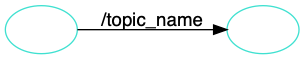
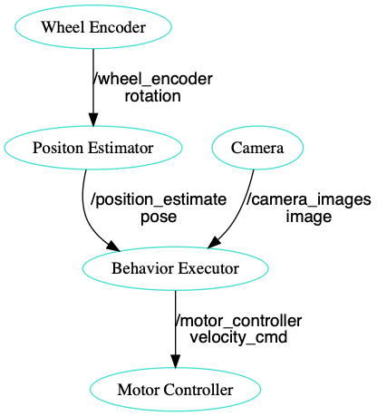
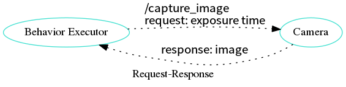

Table of Contents
1 수업
- 일시: 2018. 8. 9
- 목표: ROS를 설치하고 ROS 예제를 빌드하고 수정할 수 있다.
- 교재: https://goo.gl/sDfk3j
- 코치: 박동희 dongheepark@gmail.com
2 수업 진행
- ROS 소개,
- ROS미들웨어,
- ROS 컴포넌트 라이브러리
- Node, Topics, Message Passing, Services
- Hello ROS (catkin build)
- 드론 관련 패키지 소개
3 수업 자료
3.1 ROS
- Robot Operating System: 로봇 빌들에 사용되는 라이브러리 어플리케이션 모음 http://www.ros.org/
- 목표: 로봇을 만들때 기존의 재활용 하고 공유하자.
- History:
- 2000s: Standford Artificial intelligence
- 2007: Willow Garage
- 2013: Open Source Robotics Foundation
- 사용 분야: Drone, Kinematic ARMS(로봇암), Wheeled(바퀴), Bi-pedal(이족)
3.2 ROS Nodes and Topics

3.2.1 ROS Master Process
노드 관리

3.2.2 Topics
노드간 통신 인터페이스. 구독 발행의 이름

3.2.3 Publish and Subscribe
발행과 구독. 신문/잡지 발행 구독에 비유

실제 예제

3.3 ROS Message Passing
메시지: 노드간 통신할때 이동하는 실제 데이터
- 메시지는 텍스트로 구성. 메시지를 이해하기 쉽다.
미리 정의된 메시지 타입 :
3.4 ROS Services
- Request-Response, 1:1 통신
- PubSub이 필요 없는 경우 사용, 요청 할때만 데이터가 제공. 네트워크 부하가 적다.
3.4.1 예시: 카메라 이미지 얻기


3.5 ROS Turtlesim
Turtle

3.5.1 Turtlesim 실행하기

- 환경 변수 설정
$ source /opt/ros/kinetic/setup.bash
- roscore 실행
- roscore: Master + rosout + parameter server
- Master: 네임 서비스
- rosout: stdout/stderr 로깅
- parameter server: 파라미터 저장 서버
- roscore: Master + rosout + parameter server
$ roscore
- turtlesim 패키지의 turtlesimnode 실행
$ rosrun turtlesim turtlesim_node
- turtlesim 패키지의 turtleteleopkey 실행
rosrun turtlesim turtle_teleop_key
3.5.2 Turtlesim 노드 목록
rosnode list
/rosout : ROS 메시지 로깅.
3.5.3 Turtlesim 토픽 목록
rostopic list
3.5.4 Turtlesim 토픽 정보
rostopic info /turtle1/cmd_vel
3.5.5 Turtlesim 메시지 정보
$ rosmsg info geometry_msg/Twist geometry_msgs/Vector3 linear float64 x float64 y float64 z geometry_msgs/Vector3 angular float64 x float64 y float64 z
or
rosed geometry_msgs Twist.msg
3.5.6 Turtlesim Echo a Topic
디버깅시 편리
rostopic echo /turtle1/cmd_vel
3.5.7 rqtgraph
rgt_graph